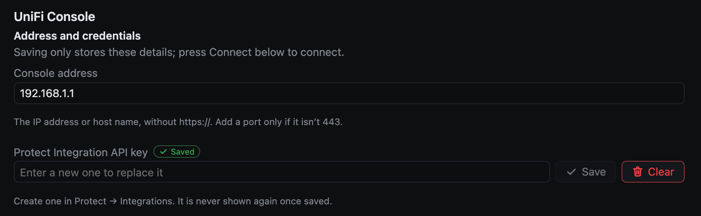
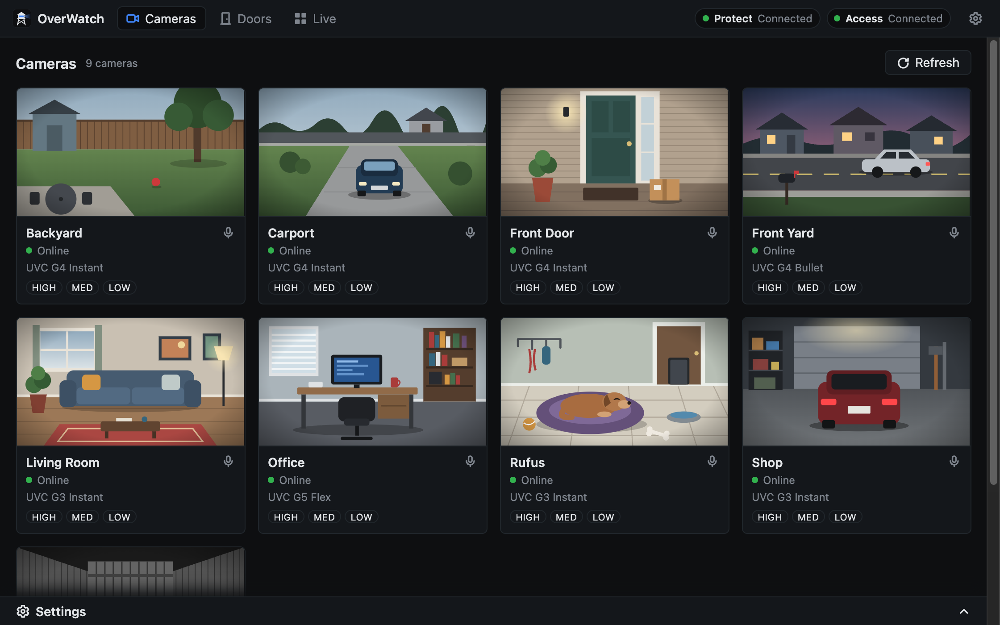
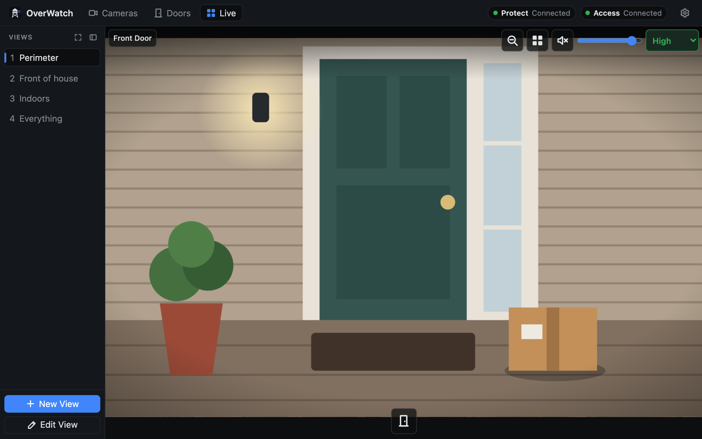
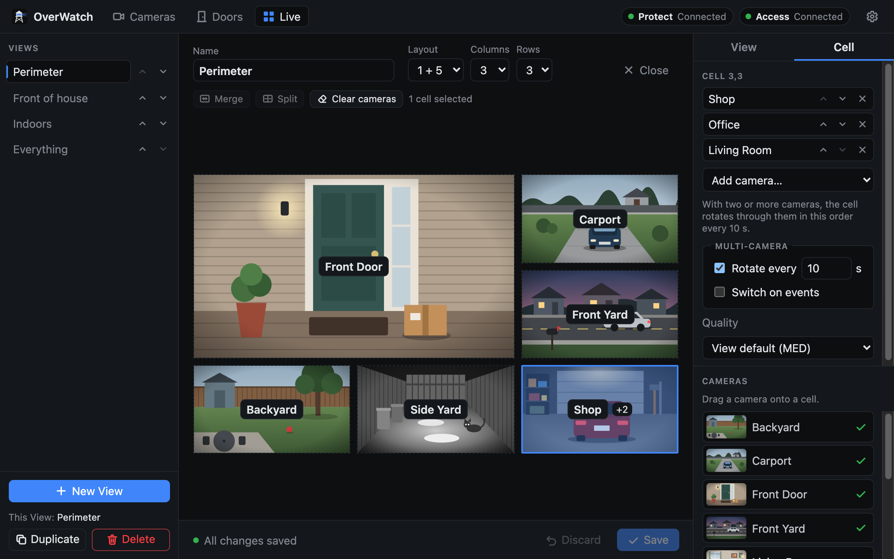
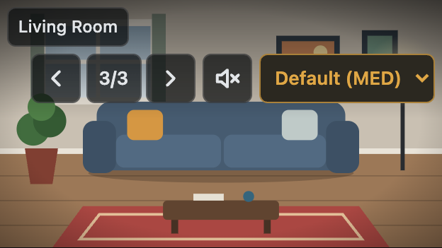
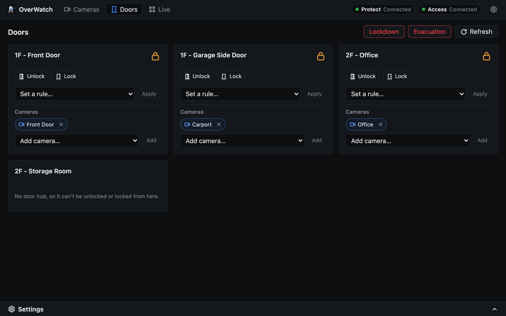
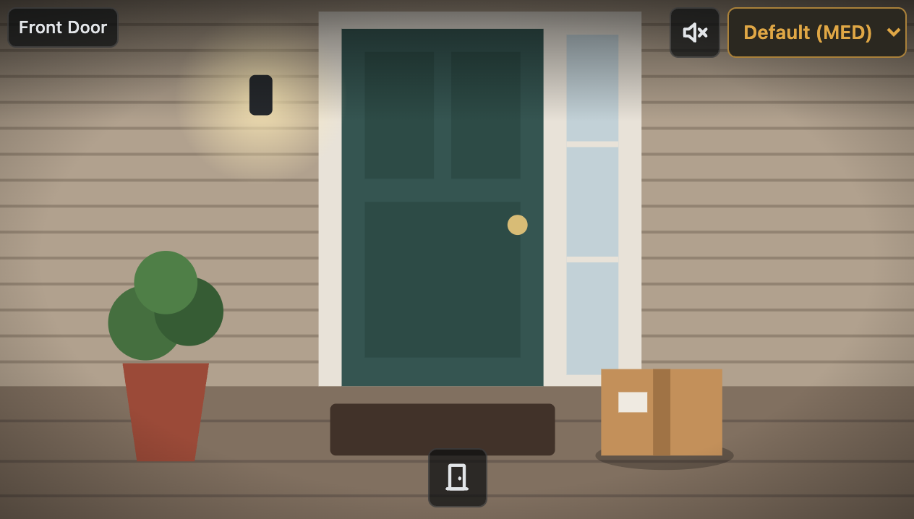

OverWatch · User guide
A quick tour of the main features, in the order you'll meet them.
OverWatch opens on Settings the first time. Later, the gear at the top right brings you back.

Cameras lists every camera on the console, with whether it's online and which stream qualities it offers.

A View is a named grid of cameras. On Live, press New View.
Pick a View from the list, or press its number, 1 to 9. OverWatch reopens on the View you used last.
Press F for focus mode, which hides everything but the video. Press it again to come back.
Click a camera to fill the window, and scroll to zoom in. Move the pointer to show the controls at the top right:

A cell can hold several cameras. In the View editor, select the cell, open the Cell tab and add more cameras to it.


This part is optional and needs UniFi Access. Turn on Enable UniFi Access in Settings and add an Access API token.

